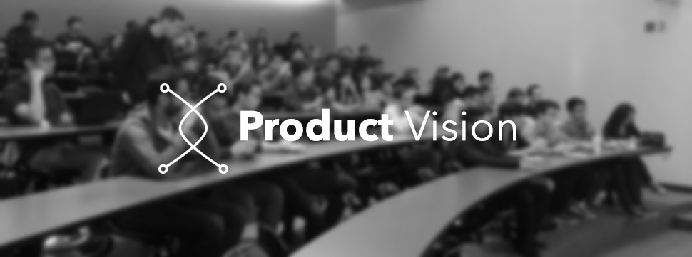
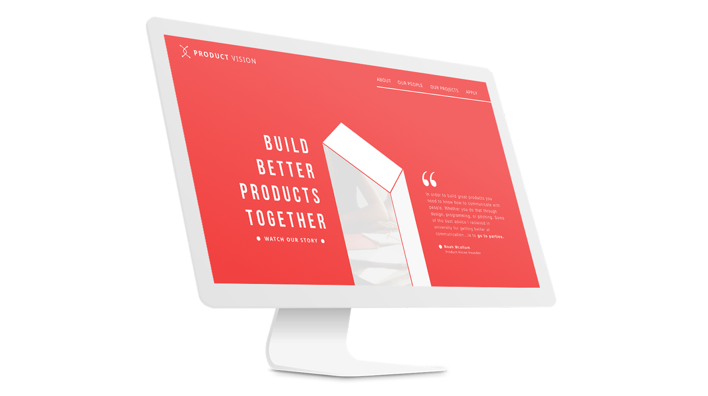
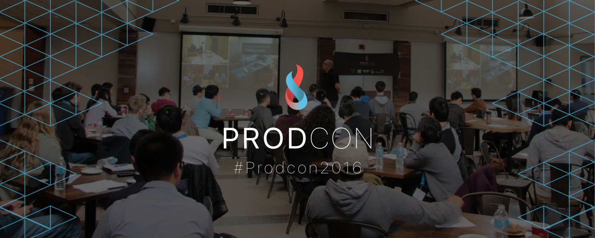

Founding Member & Chief Design Officer
 Waterloo's product management and design community.The Vision
PV's mission is to build the next generation of student leaders to tackle the world's challanges, create innovative solutions, and make a positive impact using technology. Product Vision is partnered with the creators of Hack The North so you can expect BIG things.
How do we do it?
From educational tech talks, to innovation treks at the biggest compamies; PV's main goal is to inspire big thinking! The Hacker House project, for example, is a product incubator run in Seattle where Waterloo students can venture to create the next big product.
My Role
From designing the branding and experience for various projects and events to ideating and innovating new ones. Product Vision is structured similarily to a startup. I personally had a hand in each one of the clubs initiatives from branding to logistics. Currently I am working on re-branding PV and implementing the website I have designed below.
PRODCON
I personally owned the design and development of Waterloo's first product-minded conference along with the logistics and sponsorship teams. PRODCON is a conference where students learn about product design and management from industry veterens. They then get to flex what they learned by participating in a product challenge where they develop a product solution to a company problem.
Applications for PRODCON 2017 will be open soon.
Design Workshops
I lead a series of design and development workshops on the University of Waterloo campus as a passion project within PV. Both design and Programming are something I am extremely passionate about and I wanted to share that passion and inspire others to pursue it. Just because you aren't in a design or CS program, doesn't mean you can't create something amazing!

You can see more from PV here Product Vision